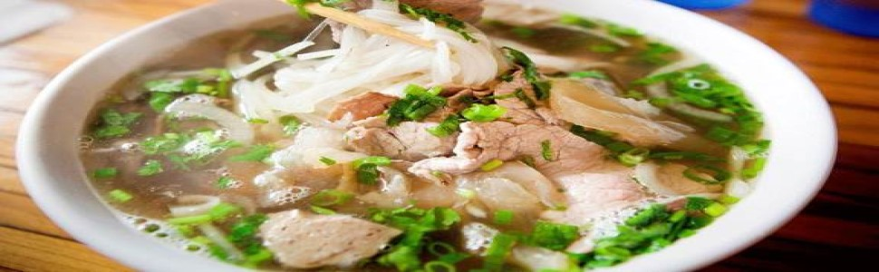
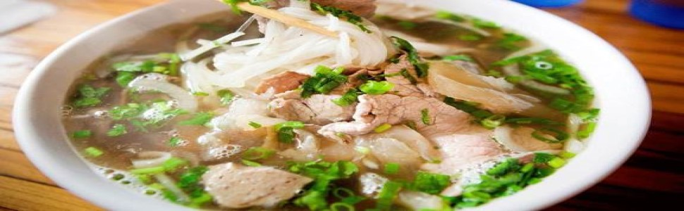

バインミーベトナムを紹介します。
バンミは、フォーと並んで、世界中の多くの国から多くのダイナーを征服してきたベトナムの豊かな料理の傑出した代表者の1人です。
「我慢できない」は、サウスチャイナモーニングポストがベトナムのパンに捧げた最初の言葉です。バンミは、フォーと並んで、世界中の多くの国から多くのダイナーを征服してきたベトナムの豊かな料理の傑出した代表者の1人です。
香港（中国）のにぎやかな湾仔市街地にある、サイゴン風の古いバインミーレストランでのヘッドシェフTheign YiePhanの気持ちから始まります。
ベトナムのパンは、「プレミアムスナック、いつも食べて飽きない」という精神で、一言一句カラフルで風味豊かに見えます。著者のペンの下で、ベトナムのサンドイッチは魅力的なカラフルなキュビズムの絵として表示されます。つまり、クラストは黄色のフランスのパンで、内側は香りのよい肉の各層の黄金色、ハーブの若い緑色、トマトのストランドと混合されたキュウリのいくつかのスライスの白い点、ニンジンの調和です。見た目が美しいだけでなく、ベトナムのサンドイッチの味は、食事をする人にとって印象的な魅力です。
それは、外側のサクサクした皮、内側の肉の豊かさ、そして新鮮なまたはミックスサラダスタイルの野菜の独特の酸味です。記事には、パンはシェフのお気に入りであるだけでなく、古いサイゴンの小さな通りでの謙虚な始まりから世界に成長した料理であるという段落があります。現代のベトナムの歴史を伝える別の方法として知られ、愛されています。
ベトナム料理への憧れと好奇心を持ちながら、ベトナムの味とフランスの皮とサンドイッチのプレゼンテーションが絡み合った興味深い組み合わせで、記事の著者はベトナム料理の歴史を探求しました。このケーキは、有名な人から提供されたドキュメンタリー情報から生まれました。ホーチミン市のレストランオーナー。それ以来、この記事は、130年以上前のフランス植民地時代のベトナム人シェフの創造性を反映しています。
フランス人のために料理をするベトナム人シェフは、パンの作り方を学び、ベトナム人の好みに合わせてレシピを「減らし」、元のフランスのレシピに代わる料理を作る方法を学びました。人々の好みと「財布」に合わせて。前世紀の50年代までに、ベトナム版のサンドイッチが一般の人々に提供されるようになりました。
サイゴンから、サンドイッチは3つの地域すべての人々によって処理および調整され、各地域により適しています。ベトナムのパンは、小さな通りを織り成す謙虚な露天商から始まり、オーストラリアや米国など、世界中にベトナム人がいる国へと徐々に道を見つけていきました。